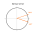
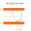

Low-pass filter
Low-pass filter
One of the low-pass filters software algorithm is described on http://en.wikipedia.org/wiki/Low-passfilter. Here is the example of Python implementation:
# Low-pass filter import random RC = 0.05 # time constant (inertion) DT = 0.02 # sampling time A = DT/( RC + DT) #A = 0.45 xk_1 = 0 print "Measured;Filtered" for i in xrange(0, 200): xm = random.randint(0, 2) # Both are equals: #xk = A*xm + (1-A)*xk_1 xk = xk_1 + A * (xm - xk_1) print "%d;%f" % (xm, xk) xk_1 = xk
With RC (tau) we can control inertia of the filter.
Here is the example how looks low-pass filter with tilt angles getting data from HMC6343 (F-16 seems to be more stable):
If you try to filtering tilt angles then you can see funny effect: turning of 3D model! It's happens due to error in sensor data which filter try to smooth, see image:


Near the scale edges error seems to be small, but angles may be, for ex., 10°, 350°, and filter will smooth their to 10°, 20°, 30°… 340°. And you can see rotation of the model on the screen. One of the approach to avoid this problem is to normalize angles. For example, 10°, 350° may be converted to 10°, -10°. After such normalization angles great then 360° should be normalized to canonical range. Algorithm is easy:
absdiff = abs(v1 - v0) if absdiff > 180.: d = 360. - absdiff if v0 > v1: v1 = v0 + d else: v1 = v0 - d
And after filtering to avoid values great then 360° we can use something like this:
if abs(v) >= 360.: v = v % 360.